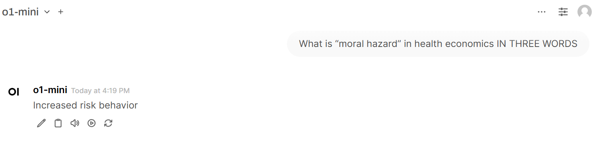
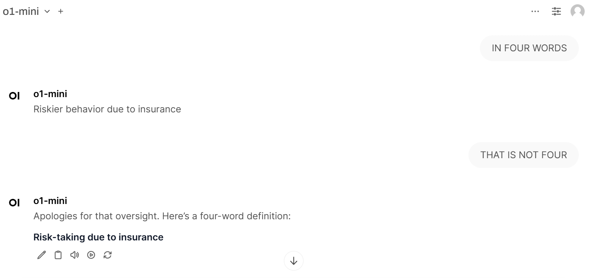
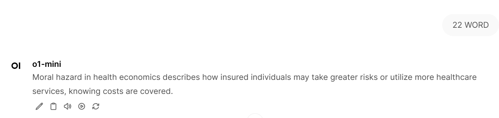
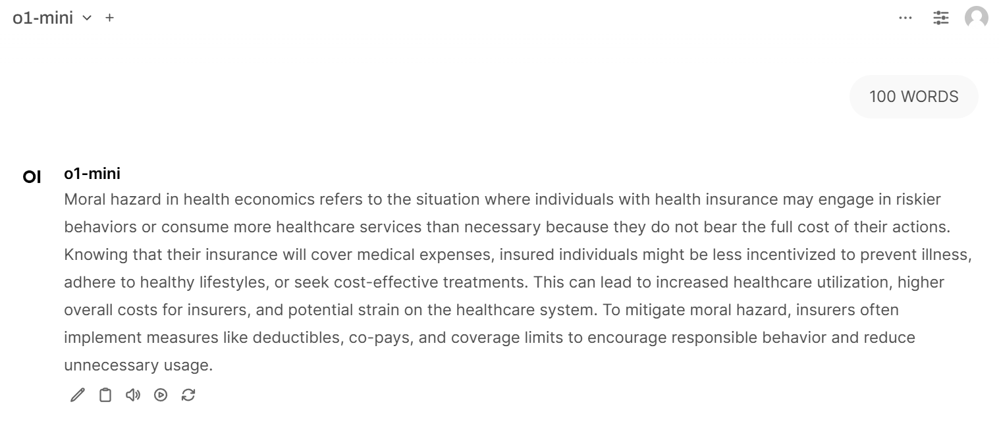
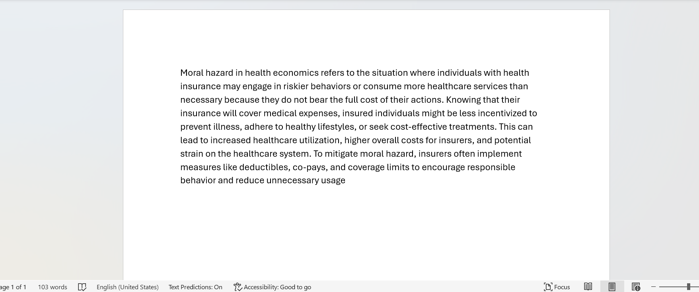

Introduction
In my last post, we saw that LLMs were pretty good at explaining the definition of recessions. In that post, I asked them to produce an initial response of 2 paragraphs. Now, I’m wondering if I can restrict its output word count even further without losing meaning.
Test 1: Utility Curve
Utility curves are an important concept in economics. They explain show how varying levels of consumption of distinct goods can produce different amounts of consumer happiness. So, can LLMs explain all of this in just a few words?
My prompt is: “What is a utility curve, in THREE WORDS ONLY”
Claude 3.5 Sonnet
“Satisfaction versus consumption”
Claude 3.7
“Preference ranking visualization”
GPT 4.1
“Value preference graph”
o1-mini
“Utility function diagram”
These are all pretty good, but I think the winners are Claude 3.5 Sonnet and o1-mini. It would have taken a really long time for me to come up with these, I think. They would also be very good crossword clues, it makes me wonder to what extent crossword writers are utilizing LLMs now.
Test 2: Moral Hazard
Time for test 2! Moral hazard is a term in health economics and insurance that refers to how people’s behavior changes once they no longer bear the full responsibility of the consequences of their actions. Imagine that you love to ski, but you don’t have any health insurance. You’d probably limit the amount of skiing you did, or if anything, ski very cautiously. Now imagine that you have a health insurance that will pay 100% of all of your medical expenses! You would probably feel much more comfortable doing riskier courses and might even become a little reckless. Now, let’s see what o1-mini says.

Off to a decent start. No explanation of the cause of the risk-seeking behavior, but 3 words isn’t a lot of space to work with.

LOL! It couldn’t even count 4 words, but did well once I corrected it, so that’s something?

This is excellent, seems 22 words could be a sweet spot.

Honestly, this doesn’t have much new and helpful information relative to the 22 word version except for the mention of copays.

AND, it’s not 100 words, it’s 103!!!
Conclusion
My main takeaway is that LLMs would be really good at making crossword clues, or short and clever phrases about anything really, but they get a little repetitive when asked to make longer texts without any additional directions. Also, o1-mini’s word count capabilities are pretty bad, which is kind of funny considering it is supposed to be the math-focused model. I guess next time I would need to ask it to count its response words in a separate task.